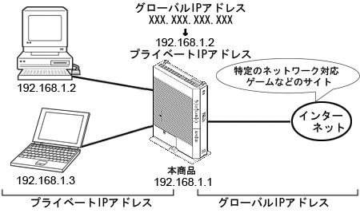

ルータを使用するとNATが働いてネットワークゲームができなくなる場合があります。
これは、ネットワークゲームで使用するポートが動的に変換されてしまうために起こります。
静的NATを使用すると、この問題を回避できます。
静的NATとは、あらかじめ固定的に使用するポート番号とパソコンを結びつける機能です。
本機能により、WAN側からの特定ポ−トの通信を指定したパソコンに送信できます。
必要に応じてNATエントリ設定をすることで、特定のサイトから特定のパソコンへ直接アクセスできます。
ネットワーク対応ゲームやストリーミングなどの外部から直接アクセスが必要なアプリケーションが使用できます。 |
|  | |